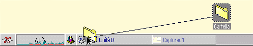

Il contenuto del menu Š basato sugli elementi aggiuntivi installati
e sulle DLL plug-in contenute nella cartella
plugins\xcenter, nella directory di installazione di &xwp;.
Fanno eccezione gli elementi "bottone oggetto", che rappresentano oggetti della Scrivania. Questi elementi servono a mostrare il contenuto di una cartella (in maniera analoga al menu "Contenuto cartella" di &xwp;), se l'oggetto Š una cartella, o altrimenti per lanciare un oggetto nella sua visualizzazione assunta.
Per aggiungere un "bottone oggetto", bisogna trascinare l'oggetto sullo
&xcenter;, come mostrato nell'immagine:

Per rimuovere un elemento, cliccarvi sopra con il tasto destro del mouse e selezionare "Rimuovi elemento"
dal suo menu contestuale.